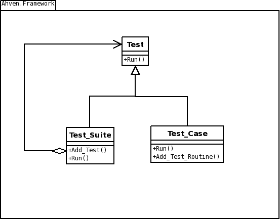

Copyright (c) 2007, 2008 Tero Koskinen <tero.koskinen@iki.fi>
Contents:
Ahven is a unit test library modeled after JUnit library for Java. So, for JUnit users the API should be familiar.
The heart of the library is an abstract
class called Test. It has two subclasses,
Test_Case, and Test_Suite.
Test_Case is the base class for other unit tests
and Test_Suite is a container, which can hold
Test objects.

For your first test case, you need to create a new package and a new
class, which is derived from Ahven.Framework.Test_Case.
Let's call the package My_Tests and the class
My_Tests.Test.
-- my_tests.ads
with Ahven.Framework;
package My_Tests is
type Test is new Ahven.Framework.Test_Case with null record;
end My_Tests;
After you have defined your class, you need to overload
Test_Case's Initialize procedure
and create your own test procedure (My_First_Test).
-- my_tests.ads
with Ahven.Framework;
package My_Tests is
type Test is new Ahven.Framework.Test_Case with null record;
procedure Initialize (T : in out Test);
procedure My_First_Test;
end My_Tests;
Next you need to create the body of the My_Tests package.
In Initialize procedure you need to do two things:
-- my_tests.adb
package body My_Tests is
procedure Initialize (T : in out Test) is
begin
Set_Name (T, "My tests");
Ahven.Framework.Add_Test_Routine
(T, My_First_Test'Access, "My first test");
end Initialize;
...
end My_Tests;
In the test procedure My_First_Test you can do anything
you want. The Ahven package defines two utility procedures for you:
Assert (Condition : Boolean; Message : String)
and Fail (Message : String).
Assert will raise Assertion_Error if
Condition is False.
Fail does what its name implies and will raise
Assertion_Error always.
These Assertion_Errors will show as failures when you
run the tests.
Here is an example:
-- my_tests.adb
with Ahven;
use Ahven;
package body My_Tests is
procedure Initialize (T : in out Test) is
begin
Set_Name (T, "My tests");
Framework.Add_Test_Routine
(T, My_First_Test'Access, "My first test");
end Initialize;
procedure My_First_Test is
begin
Assert (1 /= 4, "1 /= 4 failed!");
end My_First_Test;
end My_Tests;
To run your tests you need to feed them to a test runner.
For example, Ahven.Text_Runner.Run runs the tests
and prints the results to the standard output.
The best way to run the tests is to define a Test_Suite, add the tests there, and give the test suite to the runner.
-- runner.adb
with Ahven.Text_Runner;
with Ahven.Framework;
with My_Tests;
procedure Runner is
S : Ahven.Framework.Test_Suite_Access :=
Ahven.Framework.Create_Suite ("All my tests");
begin
Ahven.Framework.Add_Test (S.all, new My_Tests.Test);
Ahven.Text_Runner.Run (S);
Ahven.Framework.Release_Suite (S);
-- Release_Suite will release all its children also.
end Runner;
Tero Koskinen, 2008-01-07